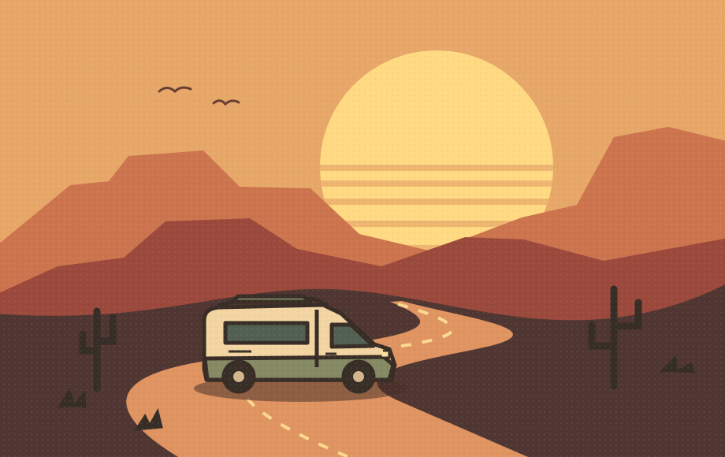
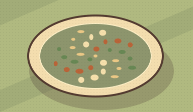
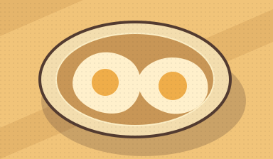
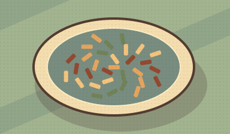

Day 1
Turkey & black bean chili
30 min · 3 servings
One-burner recipes, a week at a time. Made for vans, campsites, and any kitchen short on counter space.

Start any day. Each stop tells you what to cook, what to save, and how to use it again.
30 min · 3 servings

55 min · 2 servings

25 min · 2 servings

25 min · 1 serving

20 min · 1 serving

25 min · 2 servings

20 min · 1 serving
Fast breakfasts, no-cook wraps, and late-night snacks. Mix and match without committing to a whole week.